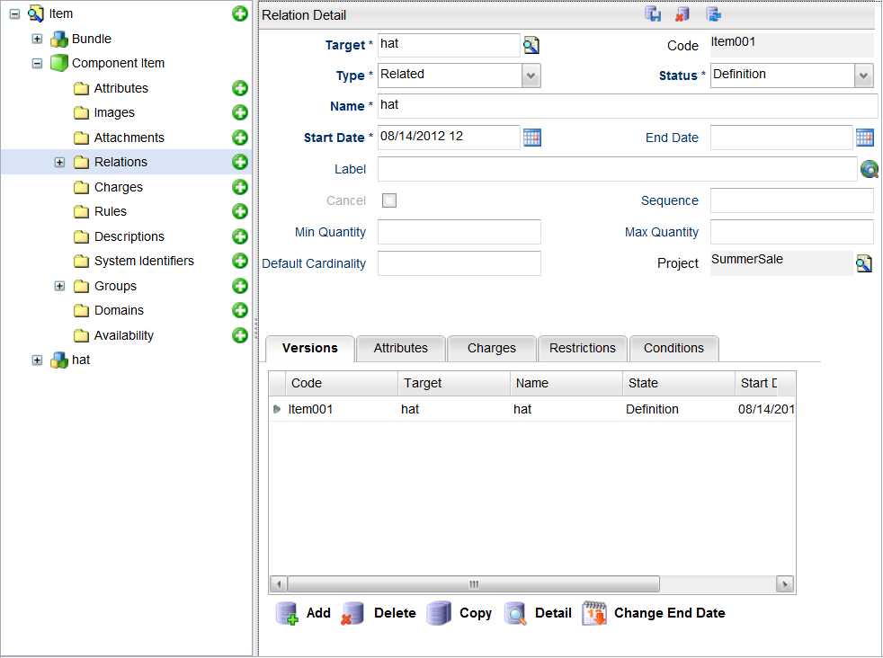

Associations define all characteristics of the item, such as its content, structure, business rules, business name, image, specification, and so on. As you can create new types of associations, the Catalog can define items with any level of detail and any rule complexity. In general, an association links a Catalog object to another Catalog object or set of data items. The majority of associations are item associations.
For example, suppose you create an association between an item (A) and another item (B). During the shopping cart process, when item A is selected, item B is displayed for selection (depends on the Orderable flag).
Some associations have a static, predefined set of properties. Other associations allow user-defined content, such as a list of attributes. The Catalog Designer application sets these attribute values and are immutable at runtime (that is, they are association properties). If the items are simple and static, the associations are simple and flexible – they have versions and conditions. The evolution of the items is the evolution of its associations.
The versions define different instances of an association with different life spans (start and end date), which are explained in the Versions section. The conditions are business rules that determine, at runtime, which association (version) applies for a particular operation, user, shopping basket, and service inventory.All associations are identified by their source (that is, the object that they start from), name, category, type, and target. Depending of their target, the associations are divided into the following categories:
| Type | Description |
|---|---|
| Associations with a single object as a target (object associations) | The object associations define the item's structural and behavioural aspects (for example, what are the rules that check the item's eligibility, what are the item's attributes, and so on). |
| Associations with multiple items as a target (groups) | The group associations define the minimum and maximum number of (sets of) objects that can be selected for a given item. |
| Associations that have another association as a target (association) qualifiers | Association qualifiers define additional properties of target associations. They are used mainly to define additional properties of item attributes and charges for item-to-item associations. |
| Associations that do not have a target (null target) open associations. | Open associations link the items with sets of data (for example, the association may link an item with the name of a workflow process that activates it or provide alternative code for the item in another system). Note: Catalog version 5.x implements the open associations as item-to-item association with the target item set to null. |
Associations fall into categories, as detailed in the following table. This table also provides a description of each association category, the target type, whether the category has predefined type codes, and more.
| Category | Description | Target | Has Conditions | Has User- Defined Types | Has User-Defined Content | Predefined Type Codes |
|---|---|---|---|---|---|---|
| Attribute | Defines the item attributes | Attribute type | No | No | No | No |
| Image | Groups images and icons to appear on the client's system | Association types or items | No | Yes | No | No |
| Attachment | Defines data file attachments associated to the item | Null | No | Yes | Yes | No |
| Rule | Defines rules that apply to an item such as availability, eligibility, and validation | Rule | No | Yes | Yes | |
| Description | Defines the minimum and maximum number of instances for a group of item codes or item-to-item association types | Association types or items | Yes | Yes | No | No |
| Group | Defines the minimum and maximum number of instances for a group of item codes or item-to-item association types | Association types or items | Yes | Yes | No | Groups |
| Relation Attribute | Defines the runtime properties of the item's attributes and the item's relationship to other items | Items | No | Yes | Yes | No |
| Item | Defines other items that are linked to the item | Item | Yes | Yes | Yes | Contains |
| Restriction | Defines item attribute restrictions | Item Attribute | Yes | Yes | Yes | No |
| Availability | Associates an item with an availability tree | Item | No | Yes | Yes | No |
The attributes category defines the item's attributes. It defines the name, attribute type, and default value of an item attribute. If an attribute association is marked as a property, the default value specified cannot be changed in client applications. Attribute associations are unconditional – the set of attributes for a given item at a given moment is statically (not dynamically) defined.
The attributes category allows for defining properties relating to Catalog items. First, define an attribute type, which is then linked to an attribute association. If the Is Property field is selected, the Default Value field cannot be changed in the client application.
The attachments category allows attachment data types to be associated to an item. This association allows you to upload an attachment to the associated item. At the item level, the Attachment Details page contains the Type field that lists all associations created for the attachments category.
Each instance of the association created is version-controlled.
The rules category specifies associations between an item and rules. Rules can be condition or validation rules. The condition rules define whether the item can be use in a given operation context (basket, inventory, or Catalog context), while the validation rules specify whether the item is valid for the given context.
Conditional rules are used in many other cases. From a formal point of view, they are association qualifiers. However, the Catalog application treats them as properties of the corresponding associations. Price formulas are used in charge type objects. They are de-facto rule associations for charge type objects.
The descriptions category defines open associations that represent item description properties. Multiple descriptions can be associated with an item and rules can be defined to determine which description association appears at what time.
The relations category allows you to categorize the relationship between one item to a target item. When you define this relationship as an item association, you can then define the relationship's attributes, as well as pricing, restrictions, and conditions on this relationship.

Click the Add button next to the Relation category of your item displays the Relation Detail page. The following fields are available:
| Field | Description |
|---|---|
| Target | |
| Code | This field denotes the code that is used to identify the assocation type. The association instances for a given source object (also called associations) are uniquely identified by their Code name. The name must follow the requirements for scriptable identifiers (that is, it must start with letter, and contain letters and digits). The association code is case-sensitive. Association names are used in the Catalog API and the Catalog rule language. Thus, it is important to match the case-sensitive code to the rule language. They are unique within an item. There are also used also to implement item inheritance. Note: Catalog can handle duplicate association names and codes within an item (for example, an itemAttribute can have attr1 as its code and attr1 as its restriction). Catalog makes this differentiation using the association category when duplicate association names are found. However, it is recommended that the association name be unique for a particular type of association within an item (for example, the itemAttribute association code cannot be a duplicate for itemA). |
| Type | This field denotes the association's data type. Click the drop-down menu and select one of the types from the list. The association type groups the associations with similar structure and purpose. If the category in which the association type is defined does not allow user-defined association content, the association types are merely names that group associations used for the same purposes. However, if user-defined association content is allowed, the association type defines the set of attribute types that are populated by the Catalog maintenance application and becomes properties of the corresponding association instance. Because the association's properties are user-defined, the generic Catalog maintenance application does not know whether the values entered for particular instance are correct. As a result, the association type may specify a validation script that checks whether the entered data is valid. Each association belongs to an association type. For example, the associations are instances of association types. Associations in categories that do not allow user-defined types have hard-coded invisible types. |
| Status | This field denotes a list of available statuses for the association (for example, Definition and Active). |
| Name | This field indicates a unique name for the association. |
| Start Date | This field represents the start (effective) date that the association is available. Refer to Start and End dates for details. |
| End Date | This field indicates the date when the association is no longer effective. Refer to Start and End dates for details. |
| Sequence | The associations are ordered entities. For example, they are shown to the user of the maintenance program in a certain order. The Catalog APIs delivers them and the Catalog core uses them in the same order. |
| Project | This field indicates with which project the association type is associated. Each object is assigned to a project. This field defaults to the active or opened project when the association is first created. |
In previous releases, if there was an item relation between Item A and Item B with an association type of contains, adding Item A into the Catalog basket also added the associated Item B. However, the number of Item Bs added into the basket would always be 1. You can provide a Default Cardinality, allowing you to specify it with a number in the item relation. If the parent item is added into the basket and the item relation association type is contains, the same number of child items is automatically added into the basket.
When the related item is passed in as a string using the createItemRelation() method, it does not have to be a valid basket item ID. In this case, the ID is considered to be an external ID, which implies the relationship is from this item to an external entity that is not in this basket.
Note: If you pass a string that is identical to a basket item ID in the same basket, it is equivalent to passing in the basket item object. As a result, it is recommended that you change the ID.
To remove an item relation (that is, change the End Date field of the relation that you want to expire), complete these steps:
To learn about ending an inherited relationship, see Remove an Inherited Relationship.
The restrictions category allows restrictions to be created for an item attribute. When an item attribute is created for an attribute associated to a restriction, the relation's properties can be defined under three tabs:
Refer to the Item Attribute Restriction section for more details.
The item category contains associations that link an item with other items. These associations represent the rules that define the item structure, optional items that can be added, good-to-have items, and so on.
Groups are special types of validation rules that define restrictions on the minimum and maximum number of items belonging to a given item. Groups may have many targets.
There are two kinds of groups:
When adding a relation to a group from the Target tab, you can specify one of the following:
The availability category allows you to associate an item with an availability tree.
You can add a new item availability either from the Item tree or from the catalog hierarchy. A Miller table appears that allows you to select from locational-based records. In the Miller table, single-click the record that you want to select. Double-click the record to display its child.